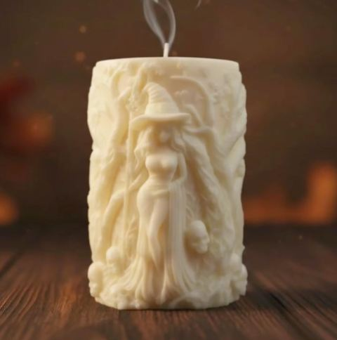

Detrás de la cera
Una marca pequeña, gallega y hecha a mano, que nace de las ganas de bajar el ritmo y cuidar los pequeños detalles.

Detrás de Aloumiño estoy yo, Naiara
Una persona sensible, observadora y muy conectada con los pequeños detalles. Siempre he creído que lo cotidiano también puede ser especial: que una luz encendida a tiempo, un aroma suave o un momento de silencio pueden cambiar por completo un día.
Aloumiño es una extensión de mí, de mi manera de sentir y de mirar la vida.
Gracias por estar aquí, por apoyar lo artesanal y por elegir crear momentos con alma.


Desde la cocina de casa
Aloumiño toma forma en la cocina de mi hogar: con materiales naturales, cera de soja, la ayuda de mis hijos y el suave ronroneo de mis gatos como música de fondo.
Nace de la necesidad de bajar el ritmo y crear con las manos pequeños momentos de calma. Cada pieza se elabora despacio, con intención y respeto por los materiales, pensada para acompañar esos instantes íntimos en los que paras, llegas a casa o simplemente necesitas cuidarte.
Porque una vela no es solo un objeto, sino un ritual: una emoción que te invita a reconectar contigo y con tu espacio.
En gallego, aloumiño significa caricia, mimo, gesto afectuoso y suave: una demostración de ternura, un trato cercano y delicado pensado para agradar y reconfortar.
Este concepto refleja la esencia de la marca: una invitación a crear momentos de calma, calidez y cuidado. Una inspiración profundamente ligada a Galicia, a su luz, a su clima y a esa sensación de hogar que envuelve y acoge.
Artesanía, detalle y mimo
Hecho despacio
Sin prisas ni producción en serie. Cada vela se vierte, se cura y se revisa a mano, y por eso ninguna es exactamente igual a otra: cada creación tiene su propia personalidad.
Materiales con respeto
Trabajamos con cera de soja y materiales naturales, cuidando cada elección para que lo que enciendes en casa sea tan bonito por dentro como por fuera.
Con raíces gallegas
Nuestros nombres, nuestras etiquetas y nuestra forma de hacer las cosas hablan de Galicia: de su luz suave, de la lluvia en la ventana y del calor de casa.
¿Encendemos algo bonito?
Descubre la tienda, crea un regalo personalizado o ven a uno de nuestros talleres.